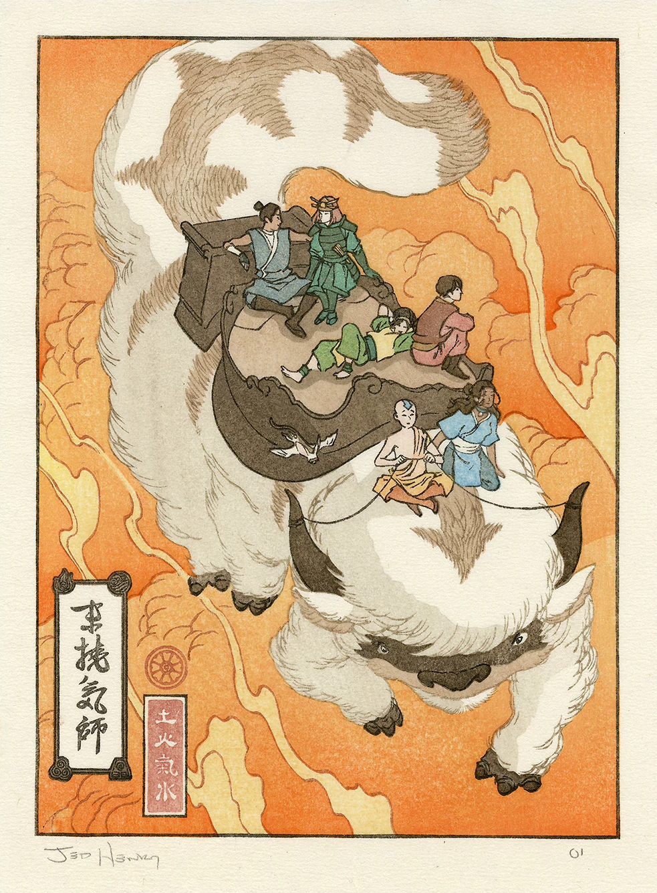

Het ontstaan van de Gaang
Christina Harud
Lang geleden, in een wereld waarin de naties van water, aarde, vuur en lucht tegen elkaar streden, werd een jonge luchtstuurder genaamd Aang wakker uit een eeuwenlange slaap. Aang wist dat hij de Avatar was, de enige die de balans in de wereld kon herstellen en de oorlog kon beëindigen.
Hij ontmoette Katara, een jonge waterstuurder, en haar broer Sokka, die hem hielpen te begrijpen wat er in de wereld was gebeurd terwijl hij sliep. Hij besloot dat hij hun hulp nodig had en overtuigde hen om met hem mee te gaan op zijn reis.
Terwijl ze reisden, kwamen ze Toph tegen, een jonge aardstuurder die de beste van haar klasse was en zich bij hun groep voegde om te helpen de wereld te redden. Ze bleek een belangrijke aanvulling op het team te zijn met haar vaardigheden als aardstuurder en de gave om de kleinste trillingen in de aarde te voelen en te gebruiken.
Maar het team miste nog een belangrijke bondgenoot: iemand van de Vuurnatie, de natie die verantwoordelijk was voor de oorlog. Dat is wanneer Aang werd geconfronteerd met Zuko, de verbannen prins van de Vuurnatie. Na verschillende gevechten en confrontaties besloot Zuko om zich bij Aang en zijn team aan te sluiten om de Vuurheer te verslaan en zijn eigen lot te bepalen.
Samen vormden Aang, Katara, Sokka, Toph en Zuko een onverslaanbaar team. Elk van hen had hun eigen unieke vaardigheden en achtergronden, maar ze werkten allemaal samen voor hetzelfde doel: de wereld redden en de oorlog beëindigen.
